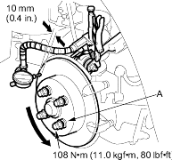
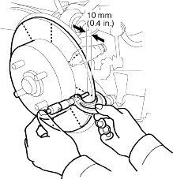

- Raise the rear of the vehicle and make sure it is securely supported. Remove the rear wheels.
- Remove the brake pads (see page 19-44).
- Inspect the disc surface for damage and cracks. Clean the disc thoroughly and remove all rust.
- Install suitable flat washers (A) and wheel nuts, and tighten the nuts to the specified torque to hold the brake disc securely against the hub.

- Set up the dial gauge against the brake disc as shown, and measure the runout at 10 mm (0.4 in.) from the outer edge of the disc.
Brake Disc Runout:
Service Limit:
0.10 mm (0.004 in.)
- If the disc is beyond the service limit, refinish the brake disc.
Max. Refinish Limit:
8.0 mm (0.31 in.)
NOTE:
- If the brake disc is beyond the service limit for refinishing, replace it (see page 18-26).
- A new disc should be refinished if its runout is greater than 0.10 mm (0.004 in.).
- Raise the rear of the vehicle and make sure it is securely supported. Remove the rear wheels.
- Remove the brake pads (see page 19-44).
- Using a micrometer, measure disc thickness at eight points, approximately 45º apart and 10 mm (0.4 in.) in from the outer edge of the disc. Replace the brake disc if the smallest measurement is less than the max. refinishing limit.
Brake Disc Thickness:
Standard: 8.9 – 9.1 mm (0.350 – 0.358 in.)
Max. Refinishing Limit:
8.0 mm (0.31 in.)
Brake Disc Parallelism:
0.015 mm (0.0006 in.) max.
NOTE: This is the maximum allowable difference between the thickness measurements.

- If the disc is beyond the service limit for parallelism, refinish the brake disc with an on-car brake lathe.
NOTE: If the brake disc is beyond the service limit for refinishing, replace it (see page 18-26).